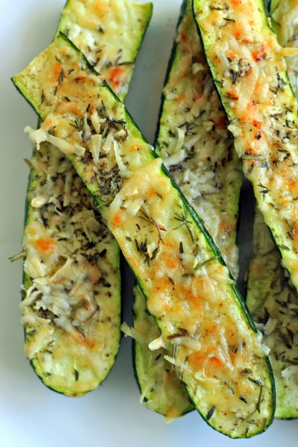

Crusty parmesan-herb zucchini bites

Original Italian recipe for delicious bites
Ingredients
- 4 medium, fresh zucchini, sliced in half
- 1/2 cup fresh Parmesan cheese, grated
- 1-2 tablespoons fresh rosemary & thyme, minced
- smidge of olive oil
- salt & pepper to taste
Preparation
- Pre-heat oven to 350F
- Lightly brush both sizes of the zucchini with olive oil and place on a foil-lined baking sheet
- Mix cheese and herbs together in a small bowl and sprinkle over the zucchini along with salt and pepper to taste
- Bake for 15 minutes and place under the broiler for the last 3-5 minutes until cheese is crispy and browned
Back to main page